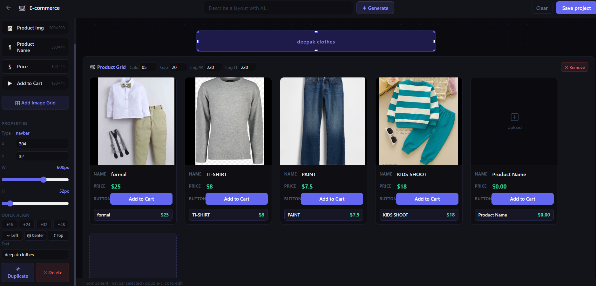
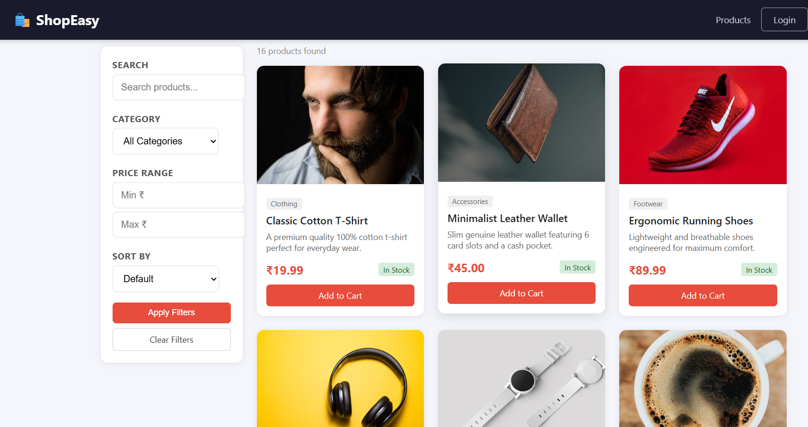
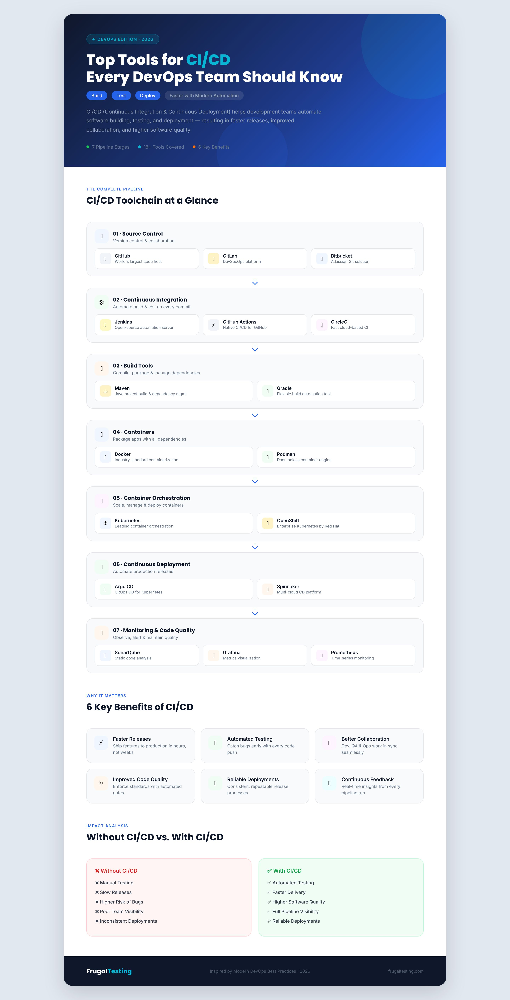

UI/UX Designer · Product Design Enthusiast · Computer Science Engineering Student
I am passionate about designing intuitive, user-centered digital experiences that combine usability, accessibility, and business goals. I enjoy solving complex problems through thoughtful design, continuous learning, and AI-assisted workflows.
A passionate designer who believes great design solves real problems.
I'm a B.Tech Computer Science & Engineering (Artificial Intelligence) student at Parul University, passionate about crafting digital experiences that are not just visually appealing but deeply functional and user-centered.
My journey into UI/UX design started with a curiosity about why some products feel effortless while others feel frustrating. That curiosity turned into a passion — I now approach every design challenge by first understanding the user, then the problem, and finally the solution.
I believe good design is invisible — it guides users naturally without friction. I combine design thinking with my engineering background to bridge the gap between beautiful interfaces and technical feasibility.
A blend of design thinking and engineering skills to build end-to-end experiences.
A structured, human-centered design process that ensures every decision is backed by research and user needs.
Gather qualitative and quantitative data to understand the problem space, market, and user behavior.
Understand users deeply through interviews, surveys, and observation to uncover real pain points.
Synthesize research insights into a clear problem statement that guides the entire design direction.
Sketch low-fidelity layouts to explore structure, content hierarchy, and user flow rapidly.
Build interactive high-fidelity prototypes in Figma to simulate the real product experience.
Validate designs with real users through usability testing to identify friction and opportunities.
Refine and improve the design based on feedback, ensuring continuous improvement and quality.
Each project reflects a complete design and development process — from problem to solution.

No-Code Website Builder with Drag & Drop Interface
Many beginners struggle to build websites without coding knowledge, creating a barrier to entry for non-technical users.
Led a team of four, coordinated backend integration, authentication with JWT, MongoDB setup, and API development using Git collaboration.
Designed a simplified drag-and-drop workflow with project management features, making website creation accessible to everyone.

Full-Stack Responsive Shopping Experience
Users need a simple, intuitive online shopping experience with clear navigation and seamless cart management.
Designed responsive UI with focus on product browsing clarity, cart UX, and authentication flow before development.
Built a full-stack responsive shopping interface with authentication, product catalog, cart, and order management.
A full-stack social platform with authentication, posts, user profiles, and a responsive UI.
A transparent look into my design thinking and problem-solving workflow.
Start by identifying who the users are, what they need, and what context they operate in. No assumptions — only research.
Conduct competitive analysis, user interviews, and surveys to gather meaningful data about the problem space.
Synthesize research to pinpoint the exact friction points users experience and prioritize them by impact.
Translate insights into low-fidelity wireframes that map out structure, flow, and content hierarchy.
Build interactive prototypes in Figma to simulate real interactions and validate design decisions early.
Run usability tests with real users, gather qualitative feedback, and document observations systematically.
Iterate based on feedback, refine visual details, and ensure the final design meets both user and business goals.
"Design is not just what it looks like and feels like. Design is how it works."
— Steve JobsA research-driven infographic designed to communicate complex DevOps concepts clearly and visually.

Developers and students lack a clear, visual reference for understanding the CI/CD ecosystem and tool landscape.
Create a visually engaging, easy-to-scan infographic that communicates tool categories, use cases, and relationships.
Used ChatGPT for content research, competitive analysis of existing CI/CD resources, and identifying key tools.
Organized tools into logical categories — Source Control, Build, Test, Deploy — for clear mental models.
Applied size, color, and spacing to guide the viewer's eye from overview to detail naturally.
Chose high-contrast colors and readable fonts to ensure the infographic is accessible to all viewers.
I use AI to accelerate ideation, research, and productivity while ensuring all final design decisions are guided by user needs and UX principles.
AI accelerates my workflow — but every design decision is validated against real user needs, accessibility standards, and UX principles. AI is a tool, not a replacement for design thinking.
Continuously upskilling through recognized programs and real-world internships.
Completed certified course through NPTEL — India's premier online learning platform by IITs and IISc.
CertifiedCompleted industry-relevant courses on Infosys Springboard covering technology and professional skills.
CertifiedCompleted a hands-on internship at CodeAlpha, working on real-world development projects and tasks.
InternshipA complete overview of my education, skills, projects, certifications, and experience — all in one document.
PDF Format · Updated 2025
I'm actively looking for UI/UX Design internship opportunities. Feel free to reach out!